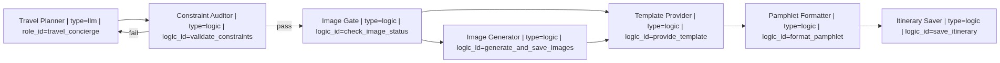
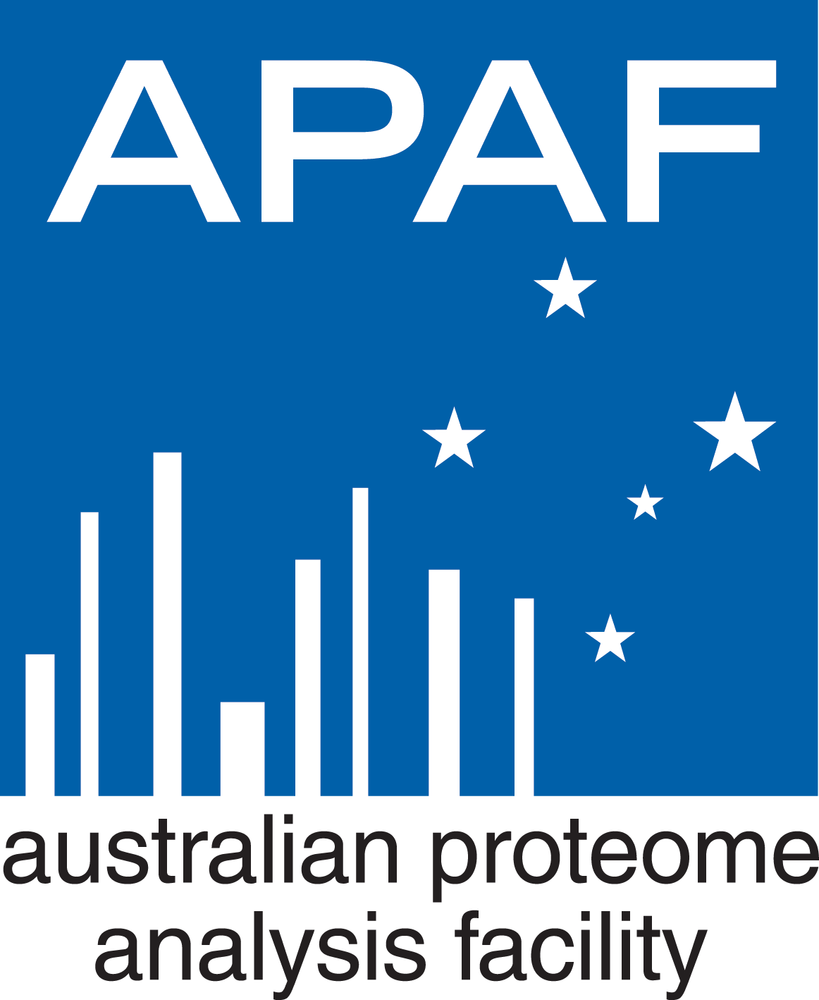
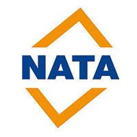

HydraR: Stateful Agentic Orchestration for R
|
|
Stateful Agentic Orchestration for Scientific Reproducibility
HydraR is a lightweight orchestrator for building autonomous AI workflows natively in R. It allows researchers to design complex, multi-step processes—such as data cleaning, analysis, and report generation—that are driven by Large Language Models (LLMs) while maintaining the rigorous auditability and reproducibility expected in scientific research.

🎯 What is HydraR? (For Non-Experts)
Think of an “Agent” as an AI-powered assistant that can perform specific tasks. Instead of just “chatting” with an AI, HydraR allows you to link multiple assistants together into a Workflow.
You create a “blueprint” (a visual map) of your research tasks. HydraR then manages the execution: it gives each assistant its own isolated workspace, remembers every step they take (checkpointing), and allows them to “loop back” and fix mistakes if a task fails. This makes AI research reliable, auditable, and automated.
⚖️ Why HydraR? (Statement of Need)
Standard agentic frameworks often rely heavily on brittle API wrappers and volatile state. HydraR addresses three fundamental challenges in scientific AI orchestration:
- 🔍 Auditability: It maintains a central memory system that continuously saves workflow checkpoints (using a DuckDB database), ensuring a complete, verifiable record of all AI interactions and data changes.
-
🛡️ Filesystem Safety: By leveraging Git worktrees,
HydraRcreates temporary, isolated project branches for each agent working in parallel. This prevents file corruption and race conditions when multiple tasks run simultaneously. -
🏗️ Portable Workflows: By defining agent logic using standard YAML files and Mermaid.js diagrams,
HydraRseparates the workflow’s design from the code that runs it. This text-based blueprint acts as an “OpenAPI for Agents”—a shareable format that is easy to audit and version-control.
📖 Glossary of Technical Terms
To help researchers from different backgrounds, here are the key technical terms used in HydraR:
- Agent: An autonomous AI entity (powered by an LLM) that can perform specific tasks or make decisions.
- Workflow: A collection of tasks (nodes) linked together to achieve a larger goal.
- DAG (Directed Acyclic Graph): A mathematical structure used to represent workflows where tasks move in a specific direction without looping back infinitely.
- State Machine: A system that keeps track of its current “status” and moves between states based on inputs or task results.
- Checkpointing: The process of saving the entire state of a workflow to a database so it can be resumed later if interrupted.
-
Git Worktree: A specialized Git feature that allows
HydraRto create a separate, temporary version of your project for an agent to work in, preventing them from overwriting your main files accidentally.
🌐 Ecosystem & Similar Packages
HydraR is a stateful orchestrator, not a low-level API wrapper. While many excellent packages focus on the communication layer, HydraR focuses on the lifecycle, state, and file-system isolation of multi-agent workflows.
-
ellmer: Excellent for high-level conversational/chat interfaces.
HydraRcan useellmeras a backend driver for individual agents within a larger managed graph. -
mall: Provides a concise syntax for “mapping” LLM calls over data.
HydraRis designed for more complex research pipelines that require memory, branching logic, and error recovery. -
gptstudio: Tools for IDE-centric coding assistance.
HydraRis built for reproducible, non-interactive pipelines and automation that can run independently of the RStudio IDE. -
LangGraph / CrewAI (Python): These are the Python equivalents.
HydraRprovides a native R alternative that integrates directly with R’s statistical and visualization ecosystems without the “translation cost” of usingreticulatefor core logic.
🚀 Key Features
-
📍 Graph Orchestration: Define complex agentic workflows using
AgentDAGwith support for parallel execution (furrr) and conditional loops. -
💾 Centralized State:
AgentStateprovides a single source of truth for all nodes, with support for complex reducers and history management. -
🕒 Persistent Checkpointing: Resumable execution threads via
Checkpointer(supporting SQLite/DuckDB). - 🖥️ CLI-First Drivers: High-fidelity drivers for local and provider-based CLIs (Gemini, Claude, OpenAI), ensuring tool calls are robust.
- 📊 Mermaid Visualization: Export your agent’s logic directly to Mermaid.js syntax for interactive documentation.
- 🛡️ Validation Engine: Integrated compile-time checks for undefined nodes, circular dependencies, and unreachable states.
Installation
You can install the development version from GitHub:
# install.packages("devtools")
devtools::install_github("apaf-bioinformatics/HydraR")System Prerequisites
HydraR drives external AI tools via their CLI interfaces. To use the full suite of drivers, ensure your chosen tools are installed and configured.
The Gemini CLI (npm install -g @google/gemini-cli) is provided as an example. You’ll then have to start the tool by typing gemini in the terminal and log into your Google account using the /auth command. You can choose to login using your Google account or provide an API key. Other CLI and API offerings have a similar setup; please refer to the manuals of those providers for information on how to set them up.
Environment Setup
To use the API-based drivers, store your API keys in a .Renviron file in your project root to keep them secure and accessible to HydraR:
# .Renviron
GOOGLE_API_KEY="your_google_api_key"
GEMINI_API_KEY="your_gemini_api_key"
ANTHROPIC_API_KEY="your_anthropic_api_key"
OPENAI_API_KEY="your_openai_api_key"[!IMPORTANT] Ensure
.Renvironis added to your.gitignore,.Rbuildignore, and any AI ignore files (e.g.,.agentignore,.claudeignore) to prevent accidental exposure of your secrets during agentic development.
[!TIP] New to HydraR? The primary resource for learning is the Complete Instruction Manual.
Case Studies & Examples
- 📍 Sydney to Hong Kong Travel Planner: Demonstrates the Zero-R-Code orchestration pattern using YAML and Mermaid.
- 🚀 Parallel Sorting Benchmark: Shows how to use Git Worktrees for isolated, parallel agent execution.
- 💾 State Persistence & Restart: Explains how to use the DuckDB checkpointer for resilient, resumable workflows.
- 🛠️ Creating Custom Drivers: Developer guide on subclassing
AgentDriverfor local LLMs or proprietary APIs. - 🎯 Targets Integration: Explains how to build reproducible, cached pipelines using the
targetspackage.
🛠️ Technical Documentation
Visit the HydraR Documentation Website for the full API reference and rendered vignettes.
For deep technical dives into the orchestration engine and developer tools, refer to the following manuals:
- HydraR Orchestration Manual: YAML anatomy, role definitions, and MCP support.
- HydraR Validation Reference: Full list of compile-time and runtime safety checks.
- Mermaid Orchestration Cheatsheet: Reserved keywords and visual syntax for agent networks.
- Useful Tools Manual: Diagnostic scripts for DuckDB state inspection and monitoring.
-
Integrating HydraR with
targets: Best practices for cached, interrupt-safe agentic pipelines. - Fan-In Implementation & Execution Strategy: Deep dive into how HydraR handles multi-parent dependencies and synchronization.
🤖 Use of Generative AI
- AI-Aided Development: Large Language Models were used to implement specific logic blocks, boilerplate code, and unit tests. Every line of AI-generated code has been manually reviewed and verified by the authors.
- Agentic Orchestration: This package is explicitly designed for the orchestration of autonomous AI agents.
- For a detailed disclosure of AI usage, please refer to the agents.md file.
- For architectural rationale and design tradeoffs, please refer to the DESIGN.md file.
🚀 Quick Start: Two Ways to Build
HydraR supports both document-first (YAML/Mermaid) and code-first (R6 classes) orchestration.
1. Visual Blueprint (YAML-First) — Recommended
This is the most “portable” way to build. Define your graph in a YAML file and load it directly.
# workflow.yml
graph: |
graph LR
A["Research Assistant | type=llm | role_id=analyst"]
B["Quality Auditor | type=logic | logic_id=verify_stats"]
A --> B
B -- "fail" --> A
library(HydraR)
wf <- load_workflow("workflow.yml")
dag <- spawn_dag(wf)
results <- dag$run()2. Code-First (R6) — Programmatic Control
Perfect for developers who want full programmatic control over node logic.
library(HydraR)
# 1. Define a simple logic node
node_hello <- AgentLogicNode$new(
id = "hello_world",
logic_fn = function(state) {
input_text <- state$get("input")
list(status = "SUCCESS", output = list(message = paste("Hello", input_text)))
}
)
# 2. Build the orchestrator
dag <- AgentDAG$new()
dag$add_node(node_hello)
dag$compile()
# 3. Execute
results <- dag$run(initial_state = list(input = "Hydra"))
print(results$results$hello_world$output$message)
# [1] "Hello Hydra"📊 Visualizing Execution
HydraR includes a powerful visualization engine that goes beyond static DAGs. You can generate status-colored plots after a run to identify bottlenecks and failures.
Interactive Rendering in R
We recommend using the DiagrammeR package to render your DAGs:
library(HydraR)
library(DiagrammeR)
# Green = Success, Red = Failure, Blue = Active path
DiagrammeR::mermaid(dag$plot(status = TRUE))🤖 Use of Generative AI
- AI-Aided Development: Large Language Models were used to implement specific logic blocks, boilerplate code, and unit tests. Every line of AI-generated code has been manually reviewed and verified by the authors.
- Agentic Orchestration: This package is explicitly designed for the orchestration of autonomous AI agents.
- For a detailed disclosure of AI usage, please refer to the agents.md file.
- For architectural rationale and design tradeoffs, please refer to the DESIGN.md file.
🛠️ Custom Drivers
HydraR is provider-agnostic. You can extend the framework by creating custom R6 classes that inherit from AgentDriver. This allows you to drive: - Local LLMs: Integration with specialized local CLI wrappers (e.g., Ollama). - Enterprise APIs: Secure connection to internal LLM endpoints via httr2. - Mock Backends: Deterministic drivers for unit testing complex DAG logic.
Refer to the Creating Custom Drivers guide for implementation details.
🤝 Acknowledgements
This project was developed at the Australian Proteome Analysis Facility (APAF), Macquarie University. We acknowledge funding from Bioplatforms Australia, enabled by the National Collaborative Research Infrastructure Strategy (NCRIS). APAF is accredited by the National Association of Testing Authorities (NATA) for compliance with the international standard ISO/IEC 17025 (accreditation number 20344).



👥 Authors
- Chi Nam Ignatius Pang (ORCID: 0000-0001-9703-5741) — Lead Architect
- Aidan Tay (ORCID: 0000-0003-1315-4896) — Core Contributor
From the APAF Bioinformatics team at Macquarie University.